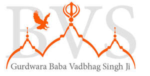
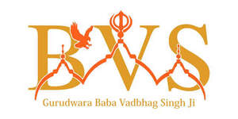

Trade Mark Journal No.2025/028 11 July 2025
UK00004223064 23 June 2025 (9,14,16,35,36,39,41,43,44,45)
Mark 1

Mark 2

- Class 9
- Musical video recordings; Video recordings; Audio visual recordings.
- Class 14
- Wristbands [charity]; Charity bracelets; Bracelets [charity]; Wrist bands [charity].
- Class 16
- Religious books.
- Class 35
- Arranging promotion of charitable fundraising events; Matching skilled volunteers with non-profit organisations; Promoting philanthropic services; Organising of volunteer programmes for others; Business consultancy services relating to the promotion of fund raising campaigns; Promotion of goods and services through sponsorship of international sports events; Promoting humanitarian activities; Organisation of trade fairs; Promotion of goods and services through sponsorship of sports events; Organization of fashion parades for sales promotion purposes; Advertising services to promote public awareness in the field of social welfare; Business consultancy services relating to management of fund raising campaigns; Video recordings for marketing purposes (Production of -); Production of video recordings for marketing purposes; Production of video recordings for publicity purposes; Video recordings for publicity purposes (Production of -); Production of video recordings for advertising purposes; Video recordings for advertising purposes (Production of -); Publicity and advertising.
- Class 36
- Charitable fundraising through the sale of charity stamps; Charitable fundraising; Fund raising for charity; Charitable fundraising services; Charitable fundraising services for underprivileged children; Charitable fund raising; Fund raising (Charitable -); Organisation of charitable collections; Charitable fund raising services; Organising of charitable collections; Fund raising for charitable purposes; Charitable fundraising by means of entertainment events; Fundraising; Charitable collections; Collections (Charitable -); Fund-raising; Fundraising and sponsorship; Providing monetary grants to charities; Fundraising and financial sponsorship; Investment of funds for charitable purposes; Provision of charitable fundraising services in relation to carbon offsetting; Providing information relating to charitable fundraising; Fundraising services; Fund sponsorship; Philanthropic services concerning monetary donations; Fund-raising services; Arranging charitable collections [for others]; Charitable fund raising in view of disaster precautions and prevention; Eleemosynary services in the field of monetary donations; Benevolent fund services; Arranging fundraising; Fund raising services via crowdfunding website; Fund raising services; Fund raising; Charitable services, namely financial services; Providing funding for non-profit entities; Trusteeship of money; Organisation of financial collections; Arranging business fundraising activities; Raising of funds for financial purposes; Provident fund services; Financial sponsorship of sports events; Organisation of collections; Collections (Organisation of -); Arranging of financing for humanitarian projects.
- Class 39
- Charitable services, namely distribution of clothing; Charitable services, namely distribution of blankets; Organisation of tours; Charitable services in the nature of providing transport for the elderly or disabled persons; Organisation of city sightseeing.
- Class 41
- Organisation of galas; Arranging and conducting of entertainment events for charitable fundraising purposes; Organisation of concerts; Arranging and conducting of sports events for charitable purposes; Fetes (Organisation of -) for entertainment purposes; Fetes (Organisation of -) for educational purposes; Arranging and conducting of live entertainment events for charitable purposes; Arranging and conducting of entertainment events for charitable purposes; Arranging and conducting of educational events for charitable purposes; Organising of galas; Organisation of roller-skating shows; Organisation of educational events; Organisation of sports tuition; Organisation of cycling events; Organisation of sporting events; Organisation of outings for entertainment; Organisation of competitions [education or entertainment]; Organisation of competitions (education or entertainment); Competitions (organisation of -) [education or entertainment]; Organisation of competitions for education or entertainment; Sporting event organization; Services for the organisation of football events; Organisation of entertainment events; Organisation of festivals; Organisation of golf competitions; Organisation of music concerts; Services for the organisation of sports events; Fetes (Organisation of -) for recreational purposes; Organisation of roller-skating competitions; Fetes (Organisation of -) for cultural purposes; Organisation of sporting competitions; Organisation of entertainment competitions; Organising community sporting events; Organisation of ice-skating competitions; Organisation of games; Organisation of educational shows; Organisation of musical concerts; Organisation of equestrian contests; Festivals (Organisation of -) for educational purposes; Organisation of sports competitions; Organisation of sports tournaments; Organisation of entertainment services; Organization of animal racing events; Organisation of sporting events and competitions; Organisation of tournaments; Organization of education competitions; Organisation of competitions; Organisation of musical events; Services for the organisation of quizzes; Services for the organisation of games; Organization of sporting events; Organisation of yachting competitions; Services for the organisation of competitions; Organisation of motorcycle rallies; Festivals (Organisation of -) for entertainment purposes; Organisation of balls; Organization of competitions [education or entertainment]; Competitions (Organization of -) [education or entertainment]; Organization of competitions for education or entertainment; Organisation of golf tournaments; Organisation of football competitions; Organisation of shows; Organisation of fashion shows for entertainment purposes; Organisation of sporting activities and competitions; Team building (education); Provision of gymnasium facilities; Recording studios; Recording studio services; Studio services (Recording -); Rehearsal [recording] studio services; Film studio services; Production of musical works in a recording studio; Recording studio services for television; Recording studio services for films; Music recording studio services; Rental of recording studios; Television studio services; Studio services for the recording of cine-films; Studio services for the recording of videos; Recording studio services for videos; Sound recording studio services; Audio recording studio services; Recording, film, video and television studio services; Film studios; Cinematographic film studio services; Sound recording studios; Movie studios; Studios (Movie -); Production of films in studios; Providing audio or video studio services; Production of video recordings; Audio recording and production; Music recording; Audio, film, video and television recording services; Video production; Television, radio and film production; Audio recording and production services; Videotape film production; Religious educational services; Organisation of exhibitions for cultural or educational purposes; Religious education; publication of books and audio recordings; Organisation of Mela (fun fair event).
- Class 43
- Providing food to needy persons [charitable services]; Charitable services, namely, providing food to needy persons; Charitable services, namely providing food and drink catering; Event facilities and temporary office and meeting facilities; Canteen services; Providing emergency shelter services in the nature of temporary housing.
- Class 44
- Hospices; Charitable services, namely providing medical services.
- Class 45
- Providing shoes to needy persons [charitable services]; Providing clothing to needy persons [charitable services]; Intellectual property consultancy services for non-profit organisations; Wedding chapel services; Religious prayer services; Organization of religious meetings; Providing and conducting non-denominational, non-religious civil marriage ceremonies; Conducting religious prayer services; Religious services; Spiritual consultancy.
Gurdwara Baba Vadbhag Singh Ji Charitable Trust